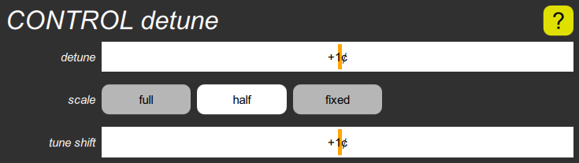

CONTROL detune cluster

The detune parameter shifts the tuning of oscillator B without altering oscillator A. The scale parameter determines how the detuning varies across the keyboard, and has three choices, a constant cents detune, a constant Hertz detune, or a compromise between the two.
The tune shift parameter alters the pitch of both oscillators, either by stretching the tuning or randomizing it.
Detuning is applied to the glide generators, and through them to the oscillators. It therefore also affects filter tuning if glide is used as a mod source, which is the normal case if a filter’s resonance is turned all the way up to make it oscillate.